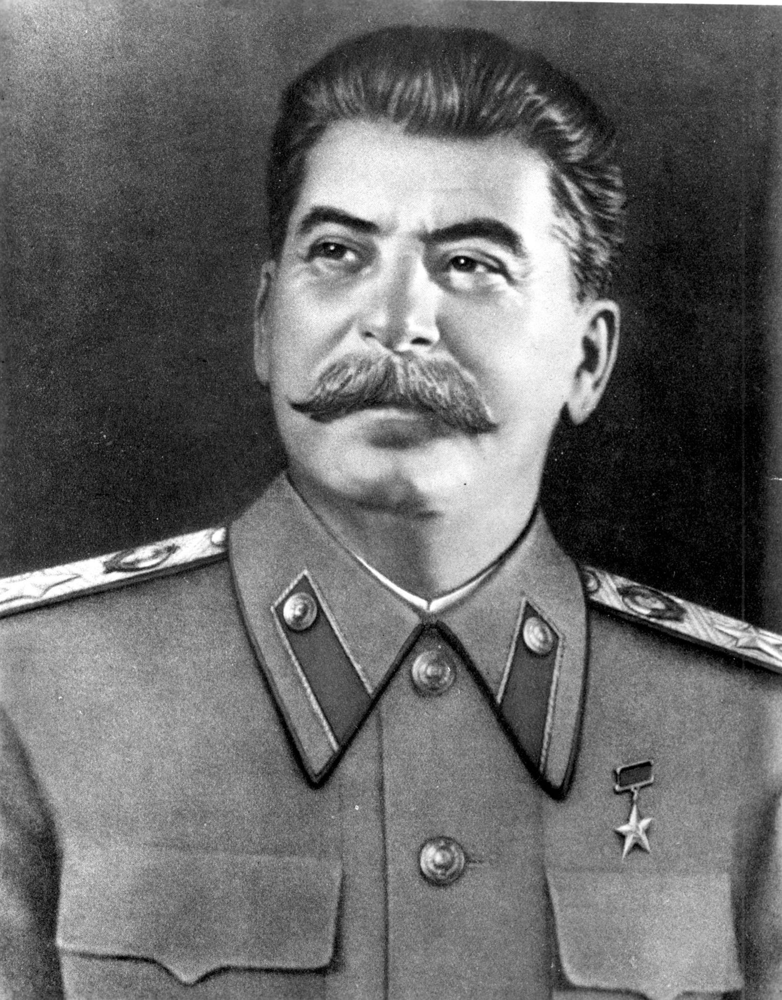
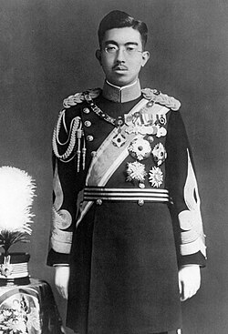
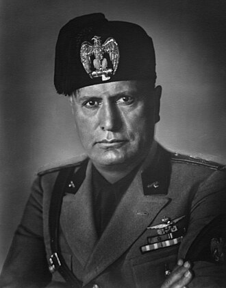

חומרי לימוד
דמויות מפתח, תאריכים חשובים, כרטיסיות ושאלות חיבור לבגרות.
דמויות ומנהיגים מרכזיים
לחצו על כל דמות למידע נוסף בוויקיפדיה

אדולף היטלר (1889-1945)
תפקיד: מנהיג גרמניה הנאצית
עובדות מרכזיות: הוביל את המפלגה הנאצית, ביסס את המשטר הטוטליטרי והוביל להשמדת יהדות אירופה.
מותו: התאבד בבונקר בברלין, 30 באפריל 1945

וינסטון צ'רצ'יל (1874-1965)
תפקיד: ראש ממשלת בריטניה (1940-1945)
עובדות מרכזיות: הוביל את העמידה הבריטית נגד גרמניה הנאצית והפך לסמל של נחישות.

פרנקלין ד' רוזוולט (1882-1945)
תפקיד: נשיא ארצות הברית (1933-1945)
עובדות מרכזיות: הוביל את ארה"ב במלחמה, קידם את חוק השאל-החכר, השתתף בוועידות אסטרטגיות עם צ'רצ'יל וסטלין.
מותו: נפטר באפריל 1945

יוסיף סטלין (1879-1953)
תפקיד: מנהיג ברית המועצות
עובדות מרכזיות: הוביל את החזית המזרחית מול גרמניה, חתם על הסכם ריבנטרופ-מולוטוב ב-1939.

הקיסר הירוהיטו (1901-1989)
תפקיד: קיסר יפן
עובדות מרכזיות: עמד בראש יפן בזמן המלחמה בזירה הפסיפית.

בניטו מוסוליני (1883-1945)
תפקיד: מנהיג איטליה הפשיסטית
עובדות מרכזיות: ברית עם היטלר, כיבושים קולוניאליים ונפילה מהשלטון ב-1943.
ציר תאריכים מרכזיים
| תאריך | אירוע | משמעות |
|---|---|---|
| 30 בינואר 1933 | היטלר מתמנה לקנצלר גרמניה | תחילת עליית הנאצים לשלטון |
| 16 במרץ 1935 | הכרזת חימוש גרמניה | הפרת הסכם ורסאי |
| 7 במרץ 1936 | חידוש החימוש בחבל הריין | צעדים תוקפניים במדיניות החוץ |
| 9 בנובמבר 1938 | ליל הבדולח | הסלמת האלימות נגד יהודים |
| 1 בספטמבר 1939 | פלישת גרמניה לפולין | פרוץ מלחמת העולם השנייה באירופה |
| 22 ביוני 1941 | מבצע ברברוסה | פתיחת החזית המזרחית |
| 7 בדצמבר 1941 | פרל הארבור | ארה"ב מצטרפת למלחמה |
| 2 בפברואר 1943 | סיום קרב סטלינגרד | נקודת מפנה בחזית המזרחית |
| 6 ביוני 1944 | נחיתת בעלות הברית בנורמנדי | תחילת שחרור מערב אירופה |
| 7-8 במאי 1945 | כניעת גרמניה ללא תנאי | סיום המלחמה באירופה |
| 6 באוגוסט 1945 | הטלת פצצת אטום על הירושימה | שימוש ראשון בנשק גרעיני |
| 15 באוגוסט 1945 | הכרזת כניעת יפן | סיום מלחמת העולם השנייה |
| 20 בנובמבר 1945 | פתיחת משפטי נירנברג | העמדת פושעי מלחמה לדין |
כרטיסיות מושגים
לחצו על כל כרטיסיה כדי לראות את ההסבר.
בליצקריג
"מלחמת בזק" – שילוב אוויר, שריון וחי"ר להכרעה מהירה
הפתרון הסופי
תכנית נאצית להשמדה שיטתית של יהודי אירופה וקבוצות נוספות
מדיניות פיוס
מדיניות בריטית-צרפתית שאפשרה להיטלר להרחיב טריטוריות כדי להימנע ממלחמה
השואה
רדיפה והשמדה שיטתית של שישה מיליון יהודים ומיליונים נוספים ע"י גרמניה הנאצית
מדינות הציר
ברית של גרמניה, איטליה ויפן (ואחרות) מול בעלות הברית
יום ה-D
6 ביוני 1944 – הפלישה לנורמנדי (מבצע אוברלורד)
שאלות חיבור וניתוח
תרגול כתיבה וחשיבה היסטורית לפי פרקי התכנית. לחצו על כל שאלה לראות תשובה מצמצמת.
שאלה 1: עליית הנאצים לשלטון
הסבירו את התנאים בגרמניה שאפשרו להיטלר ולמפלגה הנאצית לעלות לשלטון ב-1933.
דגש: משבר כלכלי, הסכם ורסאי, משבר הדמוקרטיה והלאומיות.
תשובה:
מספר גורמים אפשרו את עליית הנאצים: (1) המשבר הכלכלי - השפל הגדול ב-1929 גרם לאבטלה מסיבית ואינפלציה, והנאצים הבטיחו פתרונות. (2) הסכם ורסאי - תנאים משפילים יצרו תחושת בושה לאומית ורצון לשיקום. (3) חולשת הדמוקרטיה - רפובליקת ויימר נתפסה כחלשה ולא יציבה. (4) פרופגנדה יעילה - הנאצים השתמשו בשעירי שעירה לאומיים והאשימו את היהודים והקומוניסטים בבעיות גרמניה.
שאלה 2: הפתרון הסופי
דונו במעבר מהדרה ורדיפה להשמדה שיטתית. מה היו השלבים בתהליך?
דגש: חקיקה, גטאות, מחנות, ועידת ואנזה.
תשובה:
התהליך היה הדרגתי: (1) חקיקה אנטי-יהודית (1933-1939) - חוקי נירנברג שללו את זכויות היהודים והדירו אותם מהחברה. (2) גטאות (1939-1941) - ריכוז יהודים באזורים מבודדים בתנאים קשים. (3) כיתות הרג ניידות (1941) - הרג המוני במזרח אירופה. (4) ועידת ואנזה (1942) - תכנון ה"פתרון הסופי" והשמדה מאורגנת. (5) מחנות השמדה (1942-1945) - אושוויץ, טרבלינקה, מיידאנק ועוד.
שאלה 3: נקודות מפנה במלחמה
זהו שלוש נקודות מפנה במלחמת העולם השנייה והסבירו כיצד שינו את מאזן הכוחות.
דגש: מידווי, אל-עלמיין, סטלינגרד, פתיחת חזית שנייה.
תשובה:
שלוש נקודות מפנה מרכזיות: (1) קרב מידווי (יוני 1942) - עצר את התקדמות יפן באוקיינוס השקט והעביר את ארה"ב למתקפה. (2) אל-עלמיין (אוקטובר 1942) - ניצחון בריטי שעצר את רומל בצפון אפריקה. (3) סטלינגרד (פברואר 1943) - התבוסה הגרמנית נכשלה, ברית המועצות עברה למתקפה. (4) נחיתת נורמנדי (1944) - פתיחת חזית מערבית ולחץ על גרמניה משתי חזיתות.
שאלה 4: אסטרטגיות בעלות הברית
השוו בין אסטרטגיות ארה"ב, ברית המועצות ובריטניה. כיצד היעדים והמשאבים עיצבו את החלטותיהן?
תשובה:
ארה"ב: אסטרטגיה תעשייתית וכלכלית - הפצצות אסטרטגיות, שליטה באוויר, ומרחק מהמלחמה אפשרו לה לבנות כוח בעוד ישירה. ברית המועצות: מלחמת התששה בחזית המזרחית - הקריבה מאות חיילים ואזרחים, אך כבשה שטחים והיוותה לגורם מכריע. בריטניה: הגנה והתששה - התמקדה בצפון אפריקה ואיטליה, שמרה על קווי אספקה והפציצה אסטרטגית.
שאלה 5: סיום המלחמה
הסבירו את המניעים להטלת פצצות האטום ואת משמעותן בסיום המלחמה.
תשובה:
מניעים: (1) הימנעות מפלישה - פלישה ליפן הייתה עשויה לגרור למאות אלפי הרוגים אמריקנים. (2) לחץ על יפן לכניעה - הפצצה הדגימה כוח מוחלט. (3) הרתעת ברה"מ - יצירת עודפות אמריקנית. משמעות: הפצצות האיצו את כניעת יפן, סיימו את המלחמה, ופתחו את עידן הגרעין ומרוץ החימוש הקר.